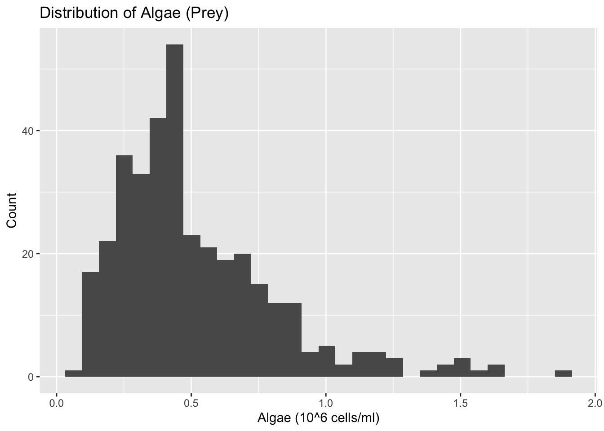
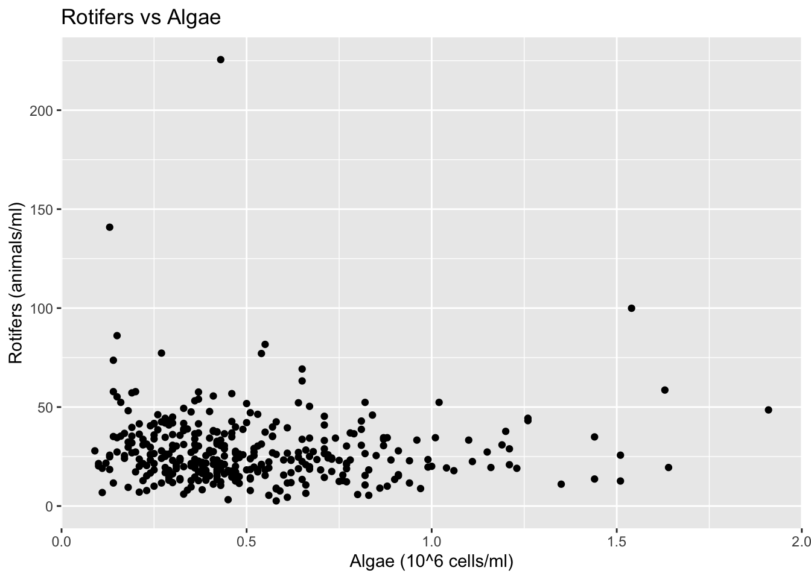
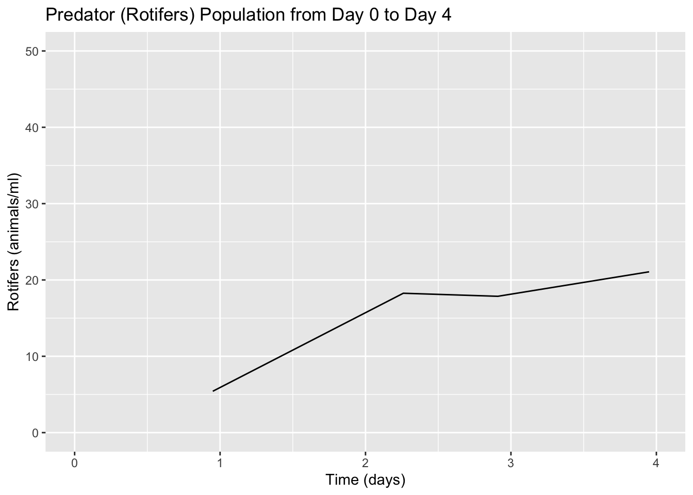
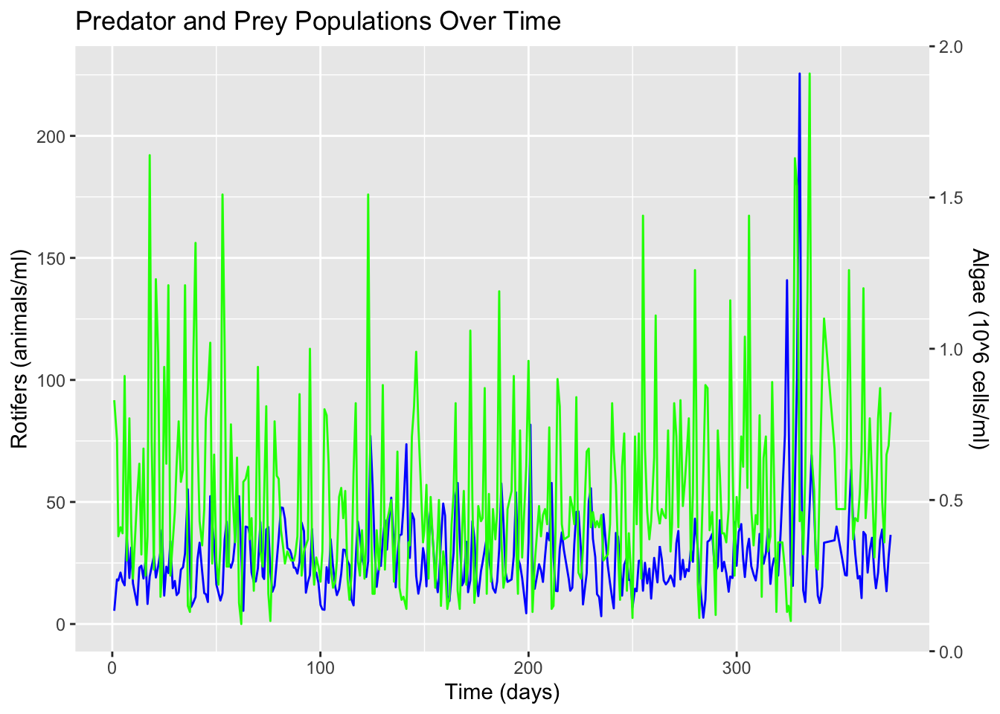
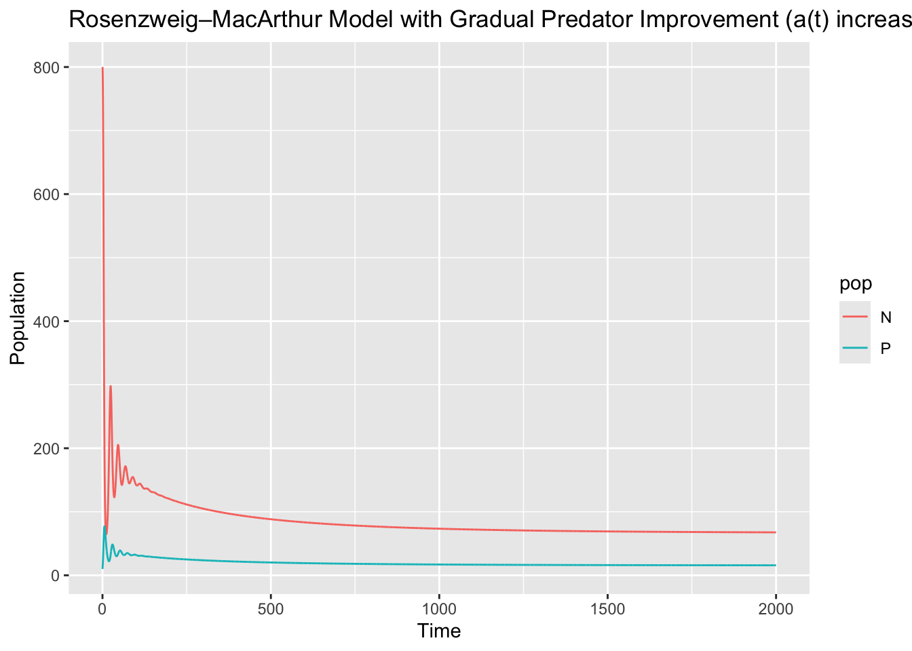
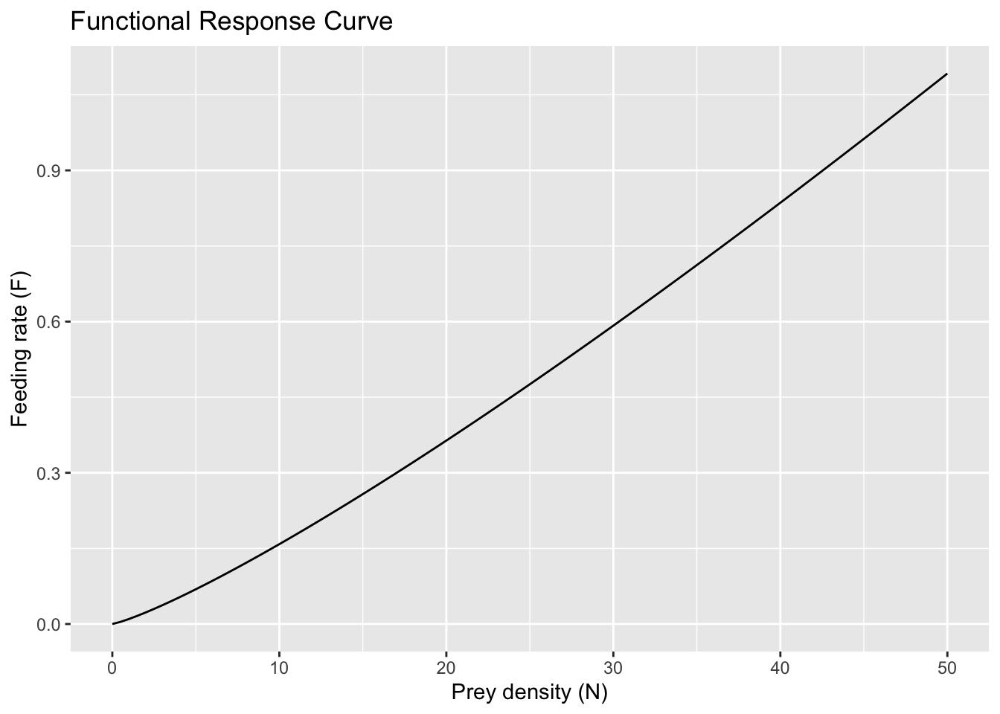

`stat_bin()` using `bins = 30`. Pick better value with `binwidth`.
Warning: Removed 7 rows containing non-finite outside the scale range
(`stat_bin()`).

ggplot(raw_data, aes(x =`algae (10^6 cells/ml)`, y =`rotifers (animals/ml)`)) +geom_point() +labs(title ="Rotifers vs Algae",x ="Algae (10^6 cells/ml)",y ="Rotifers (animals/ml)" )
Warning: Removed 8 rows containing missing values or values outside the scale range
(`geom_point()`).

Q: Describe the dataset and what you see. (Hint: Think about things like column names and what they mean (e.g. describe the species in the dataset), unique values in key columns, size of dataset, ranges of values for certain columns, aspect of the dataset that you may need to clean, what the distributions of the values look like for given columns, etc.)
Exercise 1: Clean your data using dplyr. Hint: Were there columns in your data that contained data that was a not a number? For this assignment you can remove entire rows that are problematic.
# Clean the data: remove rows with NA/NaN in key columnsclean_data <- raw_data %>%filter(!is.na(`time (days)`),!is.na(`algae (10^6 cells/ml)`),!is.na(`rotifers (animals/ml)`) )# View the cleaned datasummary(clean_data)
time (days) algae (10^6 cells/ml) rotifers (animals/ml) egg-ratio
Min. : 0.95 Min. :0.0900 Min. : 2.61 Min. :0.0000
1st Qu.: 91.25 1st Qu.:0.3025 1st Qu.: 17.51 1st Qu.:0.1500
Median :181.48 Median :0.4400 Median : 24.18 Median :0.2900
Mean :184.29 Mean :0.5143 Mean : 27.99 Mean :0.3327
3rd Qu.:276.74 3rd Qu.:0.6575 3rd Qu.: 34.87 3rd Qu.:0.4700
Max. :373.95 Max. :1.9100 Max. :225.55 Max. :1.3100
eggs (per ml) dead animals (per ml) external medium (mu mol N / l)
Min. : 0.000 Min. : 0.000 Min. :80
1st Qu.: 3.410 1st Qu.: 1.000 1st Qu.:80
Median : 6.820 Median : 1.610 Median :80
Mean : 8.359 Mean : 2.306 Mean :80
3rd Qu.:11.040 3rd Qu.: 3.010 3rd Qu.:80
Max. :62.610 Max. :25.280 Max. :80
Exercise 2: Plot predator population until day 4 using the ggplot2 functions geom_line(), xlim(start_time, end_time)andylim(0, 50)
# Define the time rangestart_time <-0end_time <-4# Plot predator population over time
Q: What type of response curve do you see? Explain your reasoning.
Q: Why might this predator have this type of response curve?
Exercise 4: Plot the predator and prey populations over time in the same chart.
# Define the time rangestart_time <-0end_time <-4# Plot predator (rotifers) population over timeggplot(clean_data, aes(x =`time (days)`, y =`rotifers (animals/ml)`)) +geom_line() +xlim(start_time, end_time) +ylim(0, 50) +labs(title ="Predator (Rotifers) Population from Day 0 to Day 4",x ="Time (days)",y ="Rotifers (animals/ml)" )
Warning: Removed 354 rows containing missing values or values outside the scale range
(`geom_line()`).

Q: Are you able to interpret this chart? Why or why not?
Exercise 5: Use the following code to plot predator and prey populations over time in the same chart (Note that there are two Y-axes displayed in the same plot).
library(scales)
Attaching package: 'scales'
The following object is masked from 'package:readr':
col_factor
ggplot(clean_data, aes(x =`time (days)`)) +geom_line(aes(y =`rotifers (animals/ml)`), color ="blue") +geom_line(aes(y =rescale(`algae (10^6 cells/ml)`, to =c(0, max(clean_data$`rotifers (animals/ml)`)))), color ="green") +scale_y_continuous(name ="Rotifers (animals/ml)",sec.axis =sec_axis(~rescale(.x, from =c(0, max(clean_data$`rotifers (animals/ml)`)), to =c(min(clean_data$`algae (10^6 cells/ml)`), max(clean_data$`algae (10^6 cells/ml)`))), name="Algae (10^6 cells/ml)") ) +labs(title ="Predator and Prey Populations Over Time", x ="Time (days)")

Q: What do you observe?
Q: Do you think this system is stable or unstable? Explain.
Rosenzweig-MacArthur model
Exercise 6: Imagine a scenario where the rotifers are introduced to a new algae system and gradually improve at handling prey over time. Using the Rosenzweig-MacArthur model equations from lab, model this scenario with Time <- seq(0, 2000, by = 0.1).
\[
r = 0.5\\
a = 0.01\\
f = 0.1\\
q = 0.2\\
h = 0.001\\
K = 1000\\
\]
# install.packages("deSolve")
# Set the parameterslibrary(deSolve)
Warning: package 'deSolve' was built under R version 4.4.3
library(dplyr)library(tidyr)library(ggplot2)r <-0.5a0 <-0.01# starting attack rate (given)a1 <-0.03# improved attack rate (choose a higher value to represent learning)tau <-500# how fast improvement happens (bigger = slower improvement)f <-0.1q <-0.2h <-0.001K <-1000# Time vectorTime <-seq(0, 2000, by =0.1)# Initial conditions (choose reasonable starting values)# N = algae, P = rotifersstate <-c(N =800, P =10)# Define the function (Rosenzweig–MacArthur with time-varying a(t))rm_model <-function(t, state, parms) {with(as.list(c(state, parms)), {# Rotifers gradually improve at capturing/handling prey:# attack rate increases smoothly from a0 to a1 a_t <- a0 + (a1 - a0) * (1-exp(-t / tau))# Holling type II functional response predation <- (a_t * N * P) / (1+ a_t * h * N) dN <- r * N * (1- N / K) - predation dP <- f * predation - q * Plist(c(dN, dP)) })}# Use deSolveout <-ode(y = state, times = Time, func = rm_model,parms =list(r = r, a0 = a0, a1 = a1, tau = tau, f = f, q = q, h = h, K = K))# Convert to dataframeout_df <-as.data.frame(out)# (Optional) make it long for easy ggplottingout_long <- out_df %>%pivot_longer(cols =c(N, P), names_to ="pop", values_to ="value")# Plot (two lines; different scales are normal here)ggplot(out_long, aes(x = time, y = value, color = pop)) +geom_line() +labs(title ="Rosenzweig–MacArthur Model with Gradual Predator Improvement (a(t) increases)",x ="Time",y ="Population" )

Q: Do you think this system is stable or unstable? Explain.
Functional Responses
Exercise 7:
As another way to represent functional response curves, represent the code below as a dataframe using df <- data.frame(N = seq(0, 50, length.out = 100)) and plot it using the ggplot()stat_function() function:
\[
F = \frac{bN^{1+q}}{1+bhN^{1+q}}
\]

Q: What do you notice as you vary the values of the terms?
Q: Which response curves do you observe?
Opinion: what was the most useful and least useful aspect of this lab assignment? Why is that the case for you?
What outside sources did you use to help you complete this work (including books, forums, LLMs, etc.)? Describe how they were used: